Samen aan tafel
Twee zachte vormen delen een open ruimte. Ze staan voor de partijen die samen tot een antwoord komen. Dezelfde vormen omlijsten mensen en gesprekken en keren terug in het icoon en drukwerk.
Karakter: warm, menselijk en toegankelijk.
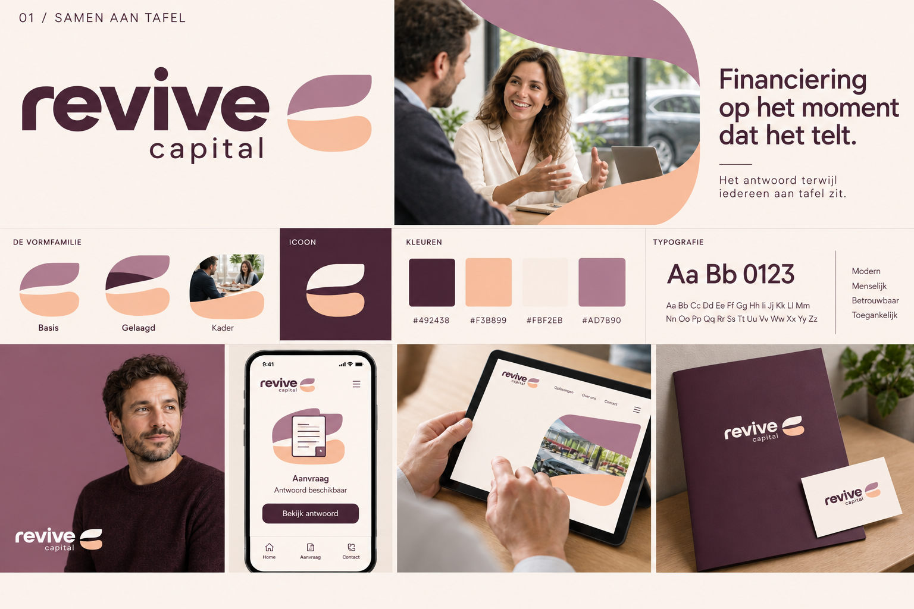
Doorstroom
Een doorlopende band verbindt de aanvraag met het antwoord. De afgeronde bochten vormen de basis voor het logo, grafische accenten en fotokaders. Zo krijgt de identiteit een duidelijk gevoel van beweging.
Karakter: helder, energiek en uitgesproken fintech.
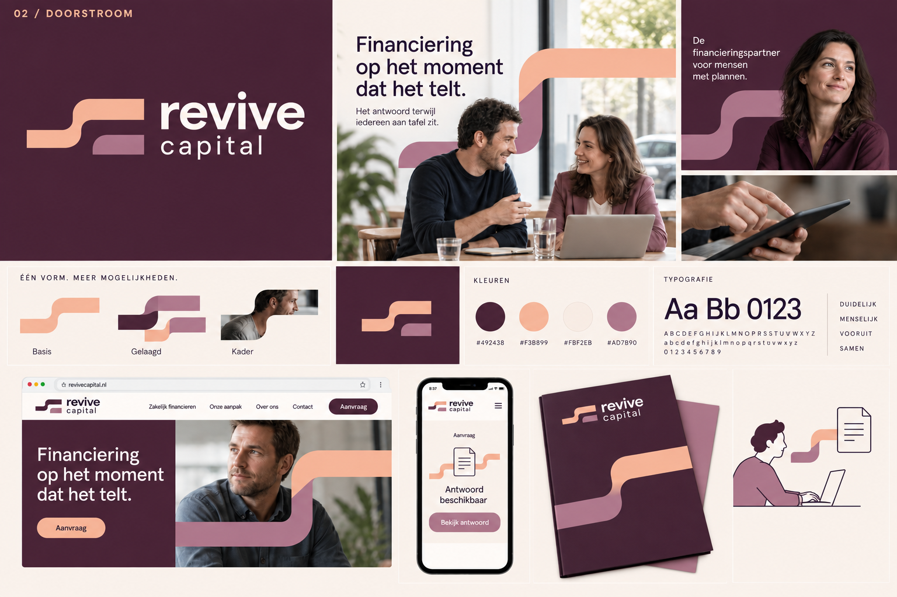
Open ruimte
De naam staat centraal. Het woordmerk werkt zelfstandig; een compact ‘re’-icoon past op kleinere plekken. De afgeronde openingen in de letters geven aanleiding tot vensters die mensen en mogelijkheden in beeld brengen.
Karakter: rustig, open en eigentijds.
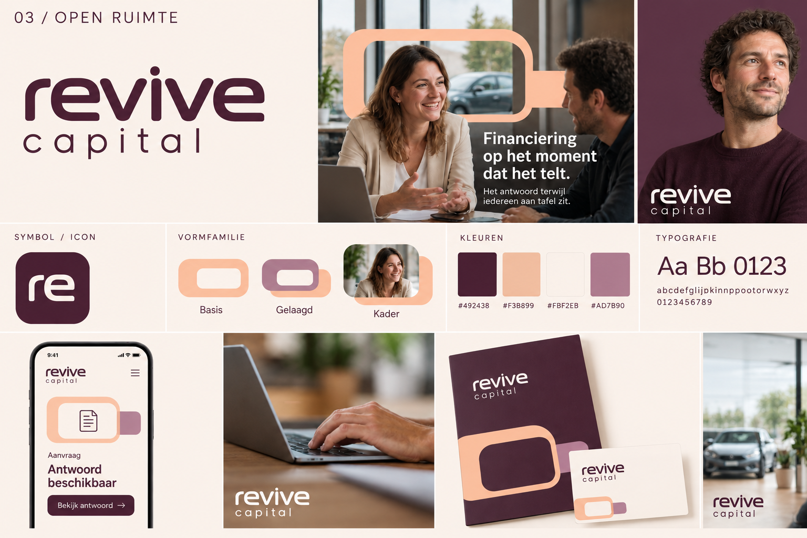
De brug
Financiering overbrugt de afstand tussen een plan en de volgende stap. Een brede, afgeronde brug vormt het symbool. De boog keert terug als grafisch vlak, gelaagde vorm en kader voor fotografie.
Karakter: stabiel, betrokken en optimistisch.
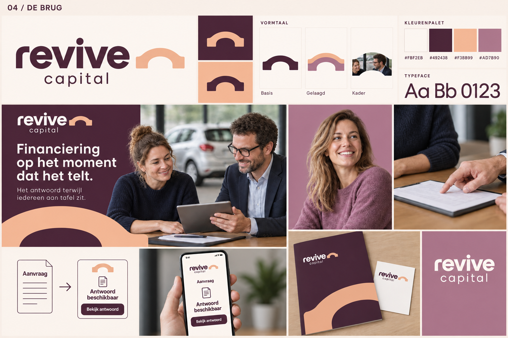
De versnelling
Twee parallelle vormen bewegen samen vooruit: de vraag en het antwoord. Hun schuine richting en afgeronde hoeken geven het logo ritme en vormen de basis voor grote kleurvlakken en fotokaders.
Karakter: doelgericht, dynamisch en precies.
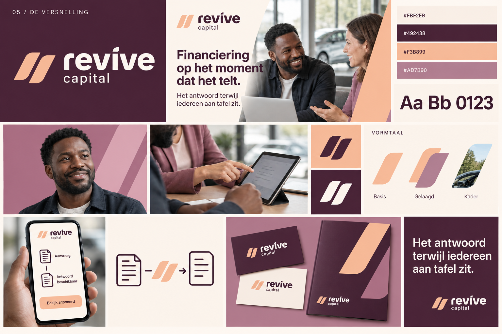
De signatuur
Een woordmerk met een eigentijdse schreef geeft de naam een persoonlijk karakter. Een compact ‘rc’-icoon hoort bij dezelfde letterfamilie. Uitvergrote letterdetails worden grafische vormen en kaders, gecombineerd met rustige interfaces.
Karakter: persoonlijk, zelfverzekerd en redactioneel.
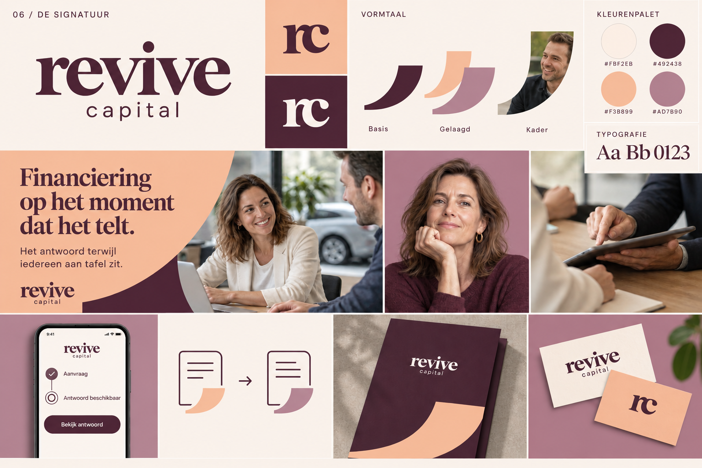
De verbinding
Twee vormen grijpen in elkaar en verbinden het plan van de ondernemer met een financieringsantwoord. Dezelfde uitsparing en afgeronde hoek keren terug in de grafische vlakken en fotokaders.
Kleuren: bosgroen, lime, krijtwit en saliegroen. Een fris palet met een rustige basis en een helder accent.
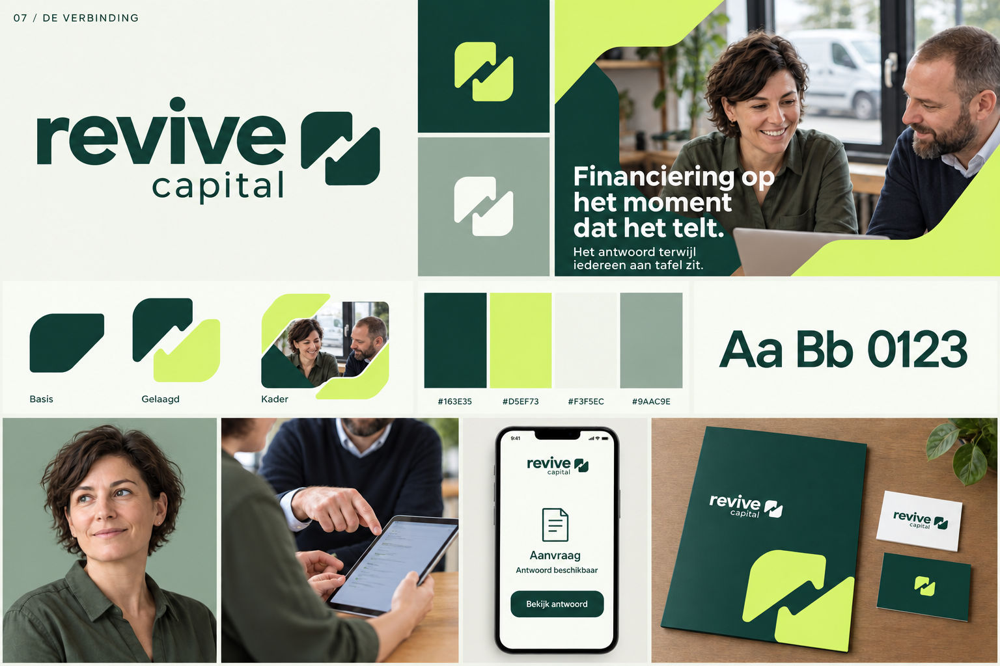
Het keerpunt
Een kwartslag verbeeldt het moment waarop een plan een volgende stap krijgt. De stevige gebogen vorm en de uitsparing vormen samen het symbool, dat ook terugkomt in kleurvlakken en kaders.
Kleuren: kobaltblauw, koraal, koel wit en nachtblauw. Een uitgesproken fintechpalet met een warm accent.
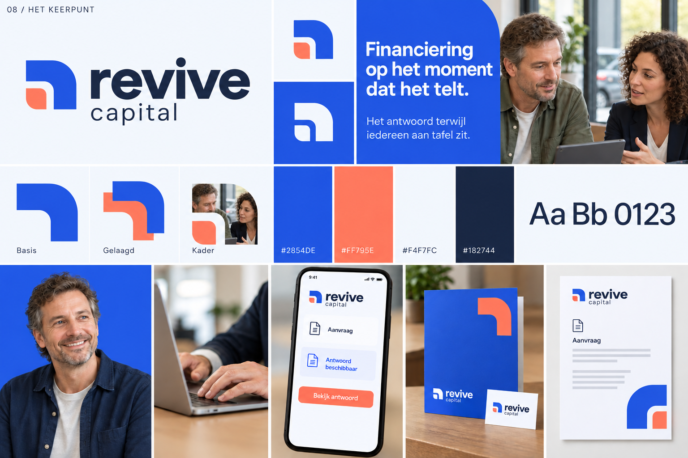
De volgende stap
Twee verspringende blokken vormen een compact teken voor vooruitgang. Hun getrapte rand geeft structuur aan de fotografie, grote kleurvlakken en gedrukte toepassingen.
Kleuren: antraciet, warm geel, papierwit en steengrijs. Direct, praktisch en herkenbaar.
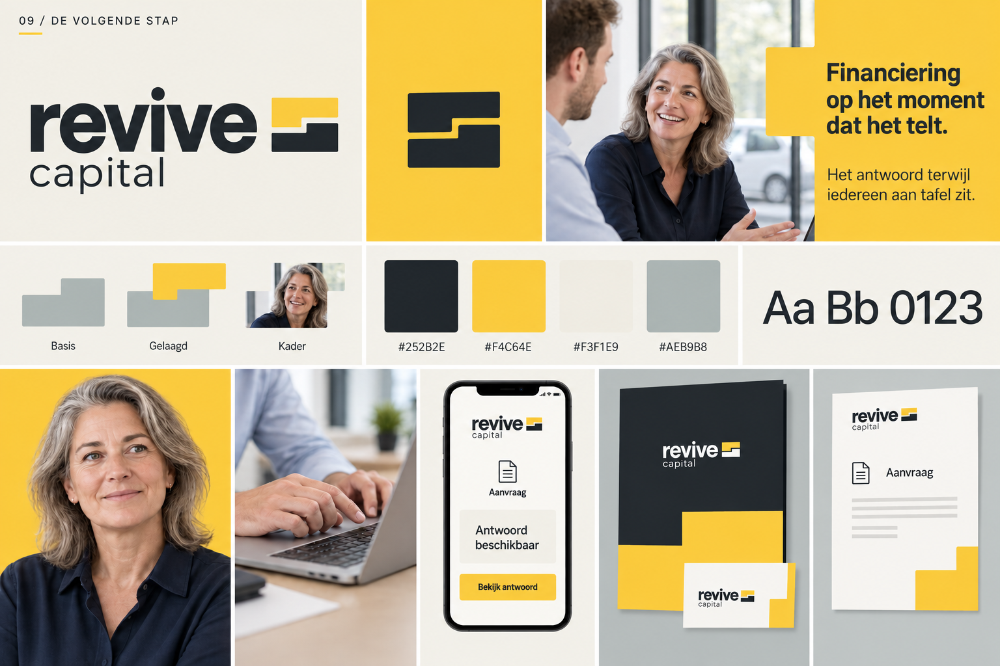
Het overzicht
Twee tegenoverliggende hoeken brengen de vraag en het antwoord in beeld. Het compacte symbool geeft ruimte aan de naam; uitvergroot richten dezelfde hoeken de aandacht op mensen, documenten en gesprekken.
Kleuren: diep petrol, aqua, ijswit en blauwgrijs. Helder en precies, met een fris accent.
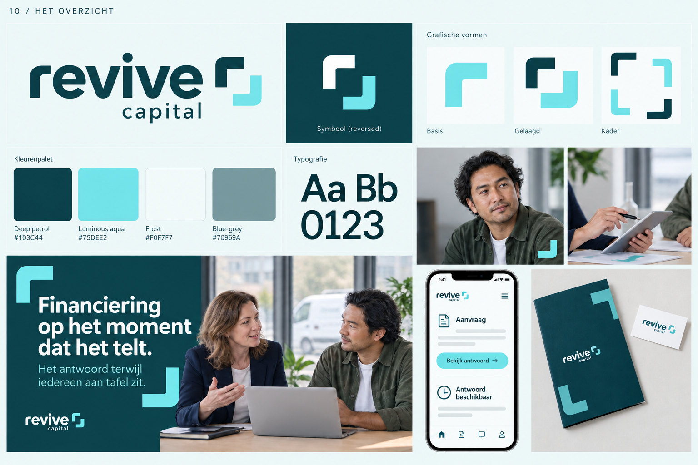
De horizon
Een horizon staat voor zicht op wat mogelijk is. Een ronde bovenkant en horizontale uitsparingen vormen het symbool. Die combinatie keert terug in grote kleurvlakken, gelaagde vormen en uitsneden voor fotografie.
Kleuren: roest, poederblauw, espresso en warm wit. Een warm, ondernemend palet met een koel tegenwicht.
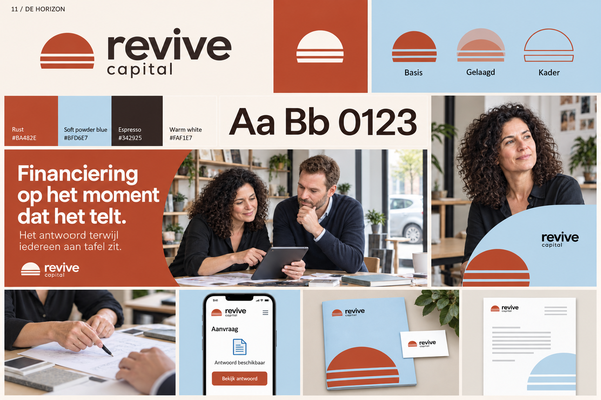
In samenspel
Drie afgeronde vormen staan voor ondernemer, adviseur en financier. Samen vormen ze een compact teken. Los, gelaagd en in een herhalend patroon geven ze de identiteit een herkenbaar ritme.
Kleuren: violet, lila, donkere inkt en porseleinwit. Eigentijds en toegankelijk, met zachte vormen en duidelijke contrasten.
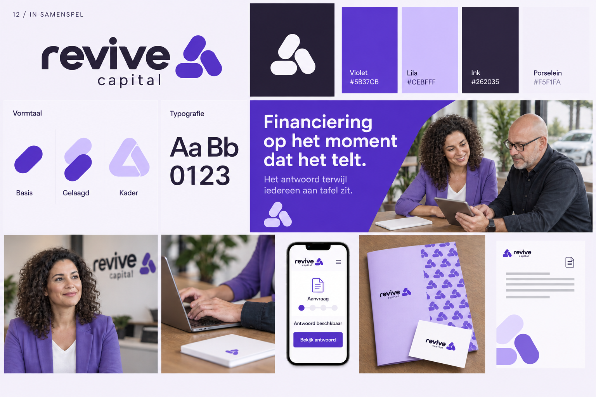
Waar gaat je voorkeur naar uit?
- Welke richting voelt het meest passend voor Revive Capital, en waarom?
- Welk logo werkt het beste als volledige naam én als klein icoon?
- Welk kleurpalet past het beste bij Revive Capital, los van je voorkeur voor een logo?
- Welke vormen en fotografie zou je verder willen uitwerken?
Geef je voorkeur aan met het nummer van de richting, 01 tot en met 12. Je kunt ook een logo uit de ene richting en een kleurpalet uit een andere richting kiezen als aanleiding voor de volgende uitwerking.